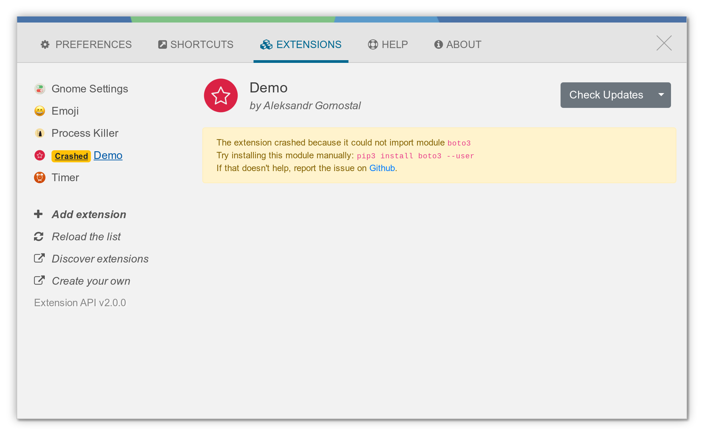

The most common for an Ulauncher Extension to fail to install is a missing Python dependency.
If you see
an error like this, it´s mostly the cause.
Message: 'com.github.brpaz.ulauncher-docsearch'
Error Name: UnhandledError
Type: KeyError
Traceback (most recent call last):
File "/usr/lib/python3/dist-packages/ulauncher/ui/windows/PreferencesUlauncherDialog.py", line 198, in
on_scheme_callback
resp = rt.dispatch(self, scheme_request.get_uri())
File "/usr/lib/python3/dist-packages/ulauncher/utils/Router.py", line 49, in dispatch
return callback(context, url_params)
File "/usr/lib/python3/dist-packages/ulauncher/ui/windows/PreferencesUlauncherDialog.py", line 433, in
prefs_extension_update_prefs
controller = ExtensionServer.get_instance().get_controller(ext_id)
File "/usr/lib/python3/dist-packages/ulauncher/api/server/ExtensionServer.py", line 76, in get_controller
return self.controllers[extension_id]
KeyError: 'com.github.brpaz.ulauncher-docsearch'
Search in the project README for the list of required dependencies and install them as specified.
In most cases, this can be done with Python Pip.
For example, the docsearch, requires the alogliasearch package to work.
It can be installed like:
pip3 install algoliasearch '>2.0,<3.0'
If you have the version 5.7.5 or greater of Ulauncher, it will display a warning message when installing the extension:
In this case, create an issue on the extension repository, but make sure you provide the Ulauncher logs.
Close any Ulauncher istance that is running and run it from the terminal:
ulauncher -v --dev |& grep "extension-name"